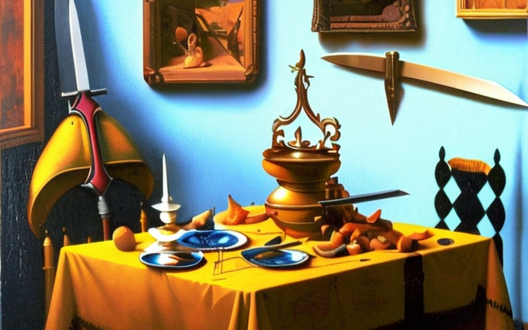
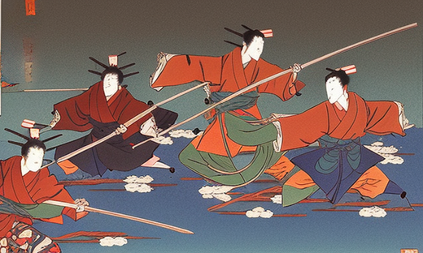
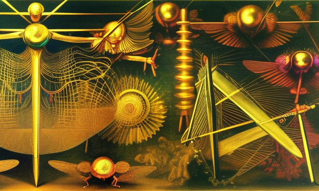
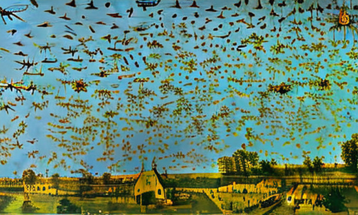
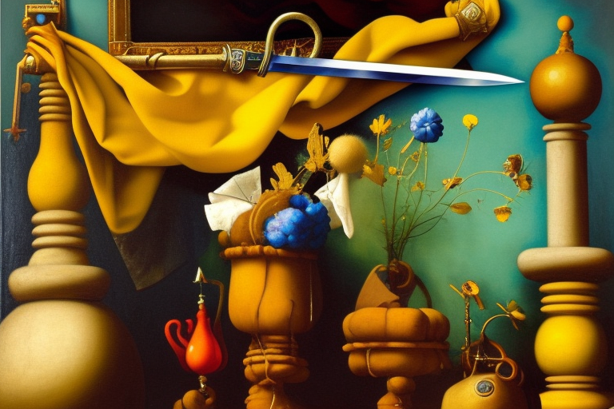

Τα ξίφη των σαμουράι και τα κουνούπια
Αρχική Σελίδα
Πίνακας Περιεχομένων
Η σοφία του Κομφούκιου

Στην αρχαιότητα, στη χώρα του ανατέλλοντος ηλίου, ζούσε μια ομάδα επιδέξιων πολεμιστών γνωστών ως σαμουράι. Αυτοί οι γενναίοι άνδρες είχαν εκπαιδευτεί στην τέχνη του σπαθιού και ήταν γνωστοί για τις κοφτερές λεπίδες και το κοφτερό μυαλό τους.
Ωστόσο, καθώς οι καιροί άλλαξαν και η καλλιεργήσιμη γη αφθονούσε, οι σαμουράι βρέθηκαν με αμέτρητη τροφή. Η γη ευημερούσε και οι πηγές τροφής έγιναν άπειρες, οι σαμουράι βρέθηκαν με γεμάτες κοιλιές και αδρανή χέρια. Άρχισαν να χειρίζονται εσφαλμένα τα ξίφη τους, παραμελώντας την εκπαίδευσή τους ενώ ταυτόχρονα η απροσεξία στις πράξεις τους. Δεν χρειαζόταν πλέον να παλεύουν για την επιβίωση και τα ξίφη τους θάμπωσαν από την έλλειψη χρήσης.
Καθώς οι σαμουράι εφησυχάζονταν, η ξιφομαχίες τους άρχισαν να χειροτερεύουν. Χειρίζονταν λάθος τα ξίφη τους κατά τη διάρκεια της εκπαίδευσης και στη μάχη, τα χτυπήματά τους ήταν αργά και αδέξια. Οι κάποτε τρομεροί σαμουράι ήταν τώρα ένας περίγελος, που κοροϊδεύονταν από τους εχθρούς τους για την ανικανότητά τους.
Ο Κομφούκιος, ο σοφός φιλόσοφος, παρατήρησε αυτό το φαινόμενο και είδε ότι ήταν αποτέλεσμα της υπερβολικής ενασχόλησης των σαμουράι στο φαγητό. Είπε, “Η αφθονία φαγητού οδηγεί σε αφθονία τεμπελιάς. Το σπαθί, όπως και το σώμα, πρέπει να διατηρείται κοφτερό με συνεχή χρήση και πειθαρχία.”
«Το σπαθί είναι εργαλείο, αλλά είναι και ευθύνη. Ο χειρισμός του με προσοχή σημαίνει ο σέβασμός στις ζωές που μπορεί να πάρει. Μην αφήνετε την αφθονία να θαμπώνει το σπαθί ή το μυαλό σας.“
Η εξέλιξη των σαμουράι

Οι σαμουράι ταπεινώθηκαν από τα λόγια του Κομφούκιου και ενστερνίσθηκαν την αλήθεια μέσα τους. Άρχισαν να περιορίζουν την πρόσληψη τροφής και να προπονούνται πιο σκληρά από ποτέ. Ανέκτησαν την οξύνοιά τους, η ξιφομαχία τους επέστρεψε στην παλιά της αίγλη και οι λεπίδες τους έγιναν και πάλι αιχμηρές. Θυμήθηκαν τη σημασία της ισορροπίας και τους κινδύνους της υπερβολής.
Αλλά καθώς περνούσαν τα χρόνια, οι σαμουράι αντιμετώπιζαν νέες προκλήσεις. Άρχισαν να αμφισβητούν την ίδια τη φύση της ύπαρξής τους και τον ρόλο που έπαιξαν στον κόσμο. Αγωνιζόντουσαν να βρουν νόημα σε μια κοινωνία όπου το φαγητό ήταν άφθονο και η βία ήταν περιττή.
Όμως το μάθημα είχε μαθευτεί. Οι σαμουράι ήξεραν ότι δεν μπορούσαν να αφήσουν την επιφυλακή τους, γιατί αν το έκαναν, τα ξίφη τους θα γίνονταν πάλι θαμπά. Και έτσι, συνέχισαν να εκπαιδεύονται και να πειθαρχούν, έχοντας πάντα επίγνωση των κινδύνων της υπερβολικής τέρψης.
Καθώς οι σαμουράι συνέχιζαν να ακονίζουν τις δεξιότητές τους, γίνονταν όλο και πιο έμπειροι στο χειρισμό των ξίφων τους. Κατάφερναν να διαπεράσουν την πιο χοντρή πανοπλία και τα ισχυρότερα υλικά με ευκολία. Αλλά η αληθινή τους δοκιμασία ήρθε όταν μια ομάδα κουνουπιών, η μυρωδιά του φαγητού τα τράβηξε, και κατέβηκαν στο χωριό.
Η τελειότητα του σώματος και του νου

Τα κουνούπια ήταν γρήγορα και άπιαστα, χοροπηδούσαν στον αέρα, με αποτέλεσμα την δυσκολία στο σημάδι. Όμως οι σαμουράι δεν νικήθηκαν εύκολα. Κινούντουσαν με αστραπιαία ταχύτητα, με τα ξίφη τους να σχίζουν τον αέρα, έκοβαν τα σώματα των κουνουπιών με ακρίβεια και ευκολία.
Ο Κομφούκιος παρατήρησε αυτή την αξιοσημείωτη επίδειξη και γέμισε με θαυμασμό. Είπε, “Το ξίφος του σαμουράι είναι σαν το σώμα του κουνουπιού, γρήγορο και θανατηφόρο. Αλλά το σπαθί είναι τόσο κοφτερό όσο το μυαλό που το χειρίζεται. Μια γεμάτη κοιλιά μπορεί να επιβραδύνει το σώμα, αλλά ένα κοφτερό μυαλό θα βρίσκει πάντα τρόπο».
Οι σαμουράι πήραν αυτά τα λόγια κατα νου και συνέχισαν να πειθαρχούν, τόσο στην ξιφομαχία όσο και στις διατροφικές τους συνήθειες. Καταλάβαιναν ότι το σώμα και το μυαλό τους ήταν στενά συνδεδεμένα και ότι έπρεπε να διατηρούν και τα δύο σε άριστη κατάσταση για να είναι πραγματικά αποτελεσματικοί πολεμιστές.
Καθώς συνέχιζαν να εκπαιδεύονται, οι σαμουράι έγιναν ακόμη πιο επιδέξιοι στο χειρισμό των ξίφων τους. Μπορούσαν να κόψουν τους μικρότερους στόχους, όπως τα φτερά του κουνουπιού, ενώ το έντομο ήταν ακόμα σε πτήση. Έγιναν γνωστοί ως οι πιο τρομεροί και σεβαστοί πολεμιστές σε όλη την Ιαπωνία, με τα ξίφη τους ως προέκταση του σώματος και του μυαλού τους.
Και ο Κομφούκιος είπε, “Το σπαθί δεν είναι απλώς ένα όπλο, είναι μια προέκταση του εαυτού. Όταν ο εαυτός ακονιστεί στην τελειότητα, το ίδιο θα είναι και το σπαθί.”
Η άφιξη του σμήνους

Ένα καλοκαίρι, ένα μεγάλο σμήνος κουνουπιών κατέβηκε στα χωράφια, προκαλώντας χάος και καταστροφή όπου κι αν πήγαιναν. Οι χωρικοί μαστίστηκαν από τα μικροσκοπικά παράσιτα και οι καλλιέργειές τους καταστράφηκαν. Αλλά οι σαμουράι, με τα κοφτερά ξίφη τους και το πειθαρχημένο μυαλό τους, ήταν αποφασισμένοι να προστατεύσουν τους συγχωριανούς τους.
Καθώς τα κουνούπια πλησίαζαν, οι σαμουράι ετοιμάστηκαν για μάχη. Τα ξίφη τους γυάλιζαν στον ήλιο καθώς στέκονταν έτοιμοι να υπερασπιστούν το χωριό τους. Τα κουνούπια ήταν παντού, με τα φτερά τους να χτυπούν άγρια καθώς βούιζαν γύρω από τους σαμουράι. Αλλά οι σαμουράι δεν φοβήθηκαν, γιατί ήξεραν ότι τα ξίφη τους ήταν το δυνατότερο όπλο.
Με αστραπιαία ταχύτητα και θανατηφόρα ακρίβεια, οι σαμουράι ανεβοκατέβαιναν τα ξίφη τους, κόβοντας τα κουνούπια με ευκολία. Τα κουνούπια έπεσαν στο έδαφος, τα φτερά τους κομμένα και τα σώματά τους άψυχα. Οι χωρικοί παρακολουθούσαν με δέος καθώς οι σαμουράι πολεμούσαν με ακρίβεια και χάρη, με τα ξίφη τους να σχίζουν χορευτικά τον αέρα.
Ο Κομφούκιος παρατήρησε τη μάχη και είδε ότι η ξιφομαχία των σαμουράι είχε κορυφωθεί σε αξεπέραστα ύψη. Είπε, “Τα κουνούπια μπορεί να είναι πολλά, αλλά το σπαθί είναι φονικότερο. Τα ξίφη των σαμουράι είναι σαν τον άνεμο, που φυσούν μέσα στο σμήνος και εξαπολύουν καταστροφή στο πέρασμά τους.”
Οι κάτοικοι του χωριού ήταν ευγνώμονες στους σαμουράι που τους προστάτευαν από τα κουνούπια, και επαίνεσαν την ικανότητα και τη γενναιότητά τους. Οι σαμουράι επέστρεψαν στο χωριό τους νικητές, τα ξίφη τους κοφτερά και το μυαλό τους πειθαρχημένο.
Και ο Κομφούκιος είπε, “Το σπαθί δεν είναι απλώς ένα όπλο, είναι σύμβολο της δύναμης και της τιμής του σαμουράι. Όταν το σπαθί χειρίζεται με επιδεξιότητα και πειθαρχία, μπορεί να προστατεύσει και να υπερασπιστεί τους ανθρώπους, από μια μεγάλης κλίμακας επίθεση κουνουπιών.
Η αρμονία με τη φύση

Καθώς περνούσαν τα χρόνια, οι κάτοικοι του χωριού άρχισαν να πειραματίζονται με νέους τρόπους προστασίας από τα κουνούπια. Προσπάθησαν να χρησιμοποιήσουν χημικά και εντομοαπωθητικά, αλλά αυτές οι μέθοδοι αποδείχθηκαν αναποτελεσματικές και επιβλαβείς για το περιβάλλον.
Οι σαμουράι, ωστόσο, αρνήθηκαν να εγκαταλείψουν τα ξίφη τους ως μέσο προστασίας. Πίστευαν ότι τα ξίφη τους ήταν ένας φυσικός και καθαρός τρόπος να αμυνθούν από τα κουνούπια και ότι η χρήση χημικών ήταν προδοσία του κώδικα τιμής.
Ο Κομφούκιος είδε τη σοφία στις πεποιθήσεις των σαμουράι και συμφώνησε ότι ο φυσικός τρόπος ήταν ο καλύτερος τρόπος. Είπε, “Το σπαθί είναι ένα δώρο από τη φύση και είναι καθήκον μας να το χρησιμοποιούμε σε αρμονία με τη φύση. Η χρήση χημικών είναι προσβολή της φυσικής τάξης και θα οδηγήσει μόνο σε καταστροφή και ανισορροπία.”
Οι χωρικοί αναγνώρισαν την αλήθεια στα λόγια του Κομφούκιου και άρχισαν να εγκαταλείπουν τη χρήση χημικών προς όφελος των σπαθιών των σαμουράι. Συνειδητοποίησαν ότι τα ξίφη δεν ήταν μόνο αποτελεσματικά στην προστασία τους από τα κουνούπια, αλλά ήταν και καλύτερα για το περιβάλλον.
Και οι σαμουράι, με τα κοφτερά ξίφη τους και το πειθαρχημένο μυαλό τους, συνέχισαν να προστατεύουν το χωριό, έχοντας πάντα στο μυαλό τους τη λεπτή ισορροπία μεταξύ ανθρώπου και φύσης.
Ο Κομφούκιος είπε, “Το σπαθί δεν είναι απλώς ένα όπλο, είναι μια υπενθύμιση της σύνδεσης μεταξύ ανθρώπου και φύσης. Όταν το χρησιμοποιούμε σε αρμονία με τη φύση, μπορούμε να βρούμε αληθινή ισορροπία και αρμονία.”